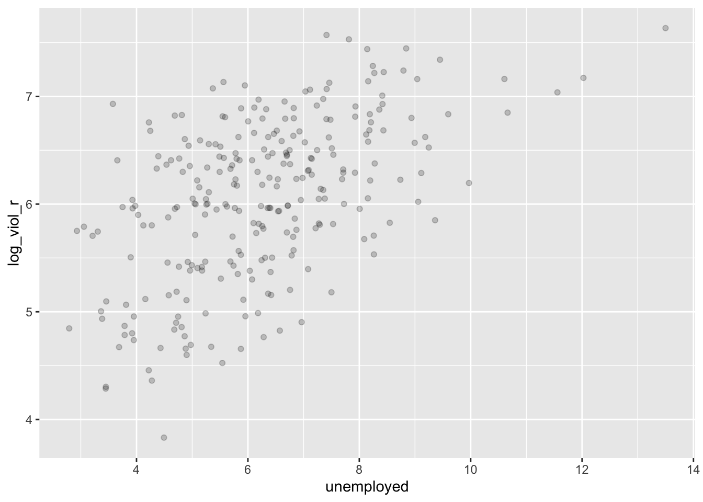

Chapter 8 Strength of Relationships
Between Categorical Nominal, Categorical Ordinal, & Numeric Variables
Learning Outcomes:
- Learn how to conduct analyses that identify the effect sizes of relationships
- Understand the output and make correct interpretations of it
Today’s Learning Tools:
Data:
- Seattle Neighborhoods and Crime Survey
- Patrick Sharkey’s data
Packages:
DescToolsdplyrggplot2GoodmanKruskalhavenheretibble
Functions introduced (and packages to which they belong)
add_row(): Add rows to a data frame (tibble)cor(): Produces the correlation of two variables (base R)cor.test(): Obtains correlation coefficient (base R)CramerV(): Conducts the Cramer’s V measure of association (DescTools)GoodmanKruskalGamma(): Conducts Goodman-Kruskal gamma measure of association (DescTools)Phi(): Conducts the phi measure of association (DescTools)rm(): Remove object from R environment (base R)SomersDelta(): Conducts the Somers’ D measure of association (DescTools)
8.1 Measures of Association
So far in the course, we have learned ways of measuring whether there is a relationship between variables. If there is a relationship between variables, it means that the value of IV can be used to predict the value of the DV. Although we are able to test for statistical significance, we are unable to say anything about how strong these associations between variables are.
In crime and criminal justice research, not only are we interested in whether there is a relationship between variables, but we are also interested in the size of that relationship. Knowing the strength of the relationship is useful because it indicates the size of the difference. It addresses the question of ‘To what extent is this relationship generalisable?’ instead of merely ‘Is there a relationship or not?’
The strength of relationship is known more as the effect size, and simply quantifies the magnitude of difference between two variables. Today’s lesson is about the effect size for relationships between categorical variables, and then ones between numeric variables.
We begin by :
- Opening our project
- Loading the required packages
- Opening the Seattle Neighborhoods and Crime Survey dataset using the function
read.dta ()and naming the data frame object asseattle_ df
- Get to know the data by using the functions
View()anddim(), and to see if it has been loaded successfully
8.2 Today’s 3
We will learn how to run effect sizes and how to interpret them. First, we learn how to do so among categorical, nominal variables; then, second, with categorical, ordinal variables; and, third, with numeric variables.
8.2.1 Between Categorical, Nominal Variables
Following last week’s lesson on the chi-square analysis, the effect size for the relationship between two categorical variables can be conducted after obtaining the χ2 statistic. A number of measures are available to test how related the two variables are to each other. We learn three of them: phi, Cramer’s V, and Goodman and Kruskal’s lambda and tau.
8.2.1.1 Phi
This measure builds directly off of the chi-square statistic, but it is for the strength of association between two binary variables. It is used for 2×2 tables to obtain a measure of association ranging from 0 to 1, whereby higher values indicate a stronger relationship.
What this measure does is account for the sample size under observation, as the chi-square statistic is influenced by it. We obtain the phi coefficient by dividing the chi-square value by the sample size and taking the square root of that result, but we can do this in R. For example, we would like to know whether there is a relationship between sex and reporting victimisation to the police, and what is the strength of that relationship. We obtain the relevant variables, then conduct a chi-square analysis and obtain the phi coefficient:
# Create copies of the variables, rename them so it is easier to remember
# sex is variable ‘QDEM3’
table(seattle_df$QDEM3)##
## 1 2
## 1145 1075# Use factor () function to create factor variable ‘sex’
seattle_df$sex <- factor(seattle_df$QDEM3, levels = c(1, 2), labels = c("female" ,
"male"))
# Reported victimisation to police is ‘Q58E’
table(seattle_df$Q58E)##
## -1 0 1 8 9
## 1582 379 255 2 2# Use factor () function to create factor variable ‘reported_to_police’
seattle_df$reported_to_police <- factor(seattle_df$Q58E, levels = c(0, 1), labels =
c("no" , "yes"))
# Chi-square analysis
# Place variable objects into new object ‘chi’
chi<-table(seattle_df$sex, seattle_df$reported_to_police)
# Make sure the relationship is significant first
chisq.test(chi)##
## Pearson's Chi-squared test with Yates' continuity correction
##
## data: chi
## X-squared = 5.8156, df = 1, p-value = 0.01588# Chi-square is significant ( p= 0.01588)
# Calculate the phi coefficient
Phi(seattle_df$sex, seattle_df$reported_to_police)## [1] 0.09903062The phi value is about 0.1, and as the range is 0 to 1, it seems that this value is closer to 0 than it is to 1. We conclude that this is a weak association between a respondent’s sex and whether they reported their victimisation to the police.
8.2.2 Between Categorical, Ordinal Variables
In some common situations in crime and criminal justice research, we work with survey data that have ordered response categories. For example, a likert scale of how strongly someone feels about abolishing the death penalty.
We learn two measures that deal with relationships between categorical, ordinal variables: Goodman-Kruskal’s Gamma and Somers’ D. Both use concordant and discordant pairs of observations to estimate the effect size. Concordant pairs are observations where the rankings are consistent for both variables, and discordant pairs are observations whose rankings are inconsistent for both variables. If a pair of observations has the same rank on the variables of interest, they are considered a tied pair.
8.2.2.1 Somers’ D
Somer’s D provides a value between −1 and +1, whereby values closer to −1 and +1 indicate better prediction ability. This commonly used measure for ordinal variables indicates how much improvement in the prediction of the dependent variable is attributed to information we know from the independent variable.
We use the SomersDelta function from the DescTools package to conduct Somers’ D. We examine the relationship between the respondents’ perception of their neighbour’s willingness to exert informal social control and how likely the respondent would miss their neighbourhood if they moved away (Q7):
# Recode the variable Q7
seattle_df$miss_neigh <- factor(seattle_df$Q7, levels = c(1, 2, 3, 4), labels = c("very likely" , "likely", "unlikely", "very unlikely"))
# Check our newly coded variable
table(seattle_df$miss_neigh)##
## very likely likely unlikely very unlikely
## 1094 760 244 102# To run Somers' D, first save the contingency table in the R object "z"
z <- table(seattle_df$intv.graff, seattle_df$miss_neigh)
# Now run the Somers' D measure
# ‘direction’ tells R which variable should be considered the IV
# It defaults to row, so if you excluded this option, the function would still provide you with a value
SomersDelta(z, direction = "row", conf.level = 0.95)## somers lwr.ci upr.ci
## 0.1867064 0.1502957 0.2231171Somers’ D is positive, but close to 0, meaning that perception of neighbours’ willingness to intervene is a poor predictor of how much respondents would miss their neighbourhood if they moved. The confidence interval around the estimate does not overlap with 0 meaning that the association is statistically significant, even though the association is weak.
8.2.3 Between Numeric Variables
This section is about measuring the strength of relationships between two ratio/ interval variables. Load Professor Patrick Sharkey’s dataset (sharkey.csv), which is a study on the effect of nonprofit organisations on the levels of crime, using the read_csv() function. Alternatively, you can load the dataset from the Dataverse website.
Name the data frame sharkey, and if you dislike scientific notation, you can turn it off in R by using options(scipen=999).
First, we examine our bivariate relationship between variables of interest through a scatterplot. The reason for this is we need to figure out if the variables have a linear relationship, and this determines what test we need to use. The extent to which two variables move together is called covariation: one variable can increase and so will the other (positive linear relationship); one variable can decrease while the other increases (negative linear relationship).
We focus on the year 2012, which is the most recent year in the dataset, and on only a few select variables. We will place them in a data frame named, df. To do this, we will use the filter() and select() functions from the dplyr package. Then, we will remove the dataset from R using the rm() function.
df <- filter(sharkey, year == "2012")
df <- select(df, place_name, state_name, black, lesshs, unemployed, fborn,
incarceration, log_viol_r, largest50)
# Goodbye sharkey
rm(sharkey)
# View the number of cities located in each of the 44 states
table(df$state_name)##
## Alabama Alaska Arizona
## 4 1 9
## Arkansas California Colorado
## 1 65 10
## Connecticut District of Columbia Florida
## 5 1 18
## Georgia Idaho Illinois
## 2 1 8
## Indiana Iowa Kansas
## 3 3 5
## Louisiana Maryland Massachusetts
## 4 1 3
## Michigan Minnesota Mississippi
## 6 3 1
## Missouri Montana Nebraska
## 5 1 2
## Nevada New Hampshire New Jersey
## 3 1 4
## New Mexico New York North Carolina
## 1 5 9
## North Dakota Ohio Oklahoma
## 1 5 4
## Oregon Pennsylvania Rhode Island
## 4 4 1
## South Carolina South Dakota Tennessee
## 3 1 6
## Texas Utah Virginia
## 30 4 7
## Washington Wisconsin
## 6 3The variables we now have contain information on the demographic composition of those cities (percent black population, percent without high school degree, percent unemployed, percent foreign born) and criminal justice characteristics (incarceration rate and the rate of sworn full-time police officers). In addition, we have measures of the violence rate and a binary variable that tells us if the city is one of the 50 largest in the country (value ‘1’ means one of the 50 largest).
As the first step in exploring relationships is to visualise them, we create a scatterplot between the log of the violence rate (log_viol_r) and unemployment (unemployed) using the ggplot() function in the ggplot2 package:
ggplot(df, aes(x = unemployed, y = log_viol_r)) +
# Jitter adds a little random noise
# This makes points less likely to overlap one another in the plot
geom_point(alpha=.2, position="jitter")
Is there a linear relationship between violence and unemployment? Does it look as if cities that have a high score on the x-axis (unemployment) also have a high score on the y-axis (violent crime)? It is hard to see but there is a trend: cities with more unemployment seem to have more violence. Notice, for example, how at high levels of unemployment, there are places with high levels of violence.
As there is a linear relationship, we conduct a Pearson’s correlation test. This test tells you whether the two variables are significantly related to one another – whether they covary. A p-value is provided to determine this. Also provided is a Pearson’s r value, which indicates the strength of the relationship between the two variables. The value ranges from −1 (a negative linear relationship) to 1 (a positive linear relationship). Values that are closer to 1 or −1 suggest a stronger relationship.
The test calculates this value, the Pearson’s r, by, first, examining the extent to which each case deviates from the mean of each of the two variables, and then multiplies these deviations:
\[covariation~ of ~scores = \sum_{i=1}^{n} (x_{1i} - \bar{x_1})(x_{2i} - \bar{x_2})\]
Second, it standardises the covariation by taking the square root of the value obtained from the sums of squared deviations from the mean of both variables. This is because, sometimes, the variables may use different units of measurement from each other. For example, one variable measures in inches and the other variable measures in decades. Thus, Pearson’s r is the ratio between the covariation of scores and this standardisation of covariation:
\[ Pearson's~ r = \frac{\sum_{i=1}^{n} (x_{1i} - \bar{x_1})(x_{2i} - \bar{x_2})}{\sqrt{[\sum_{i=1}^{n} (x_{1i}- \bar{x_1})^2][\sum_{i=1}^{n} (x_{2i}- \bar{x_2})^2]}} \]
Our null and alternative hypotheses are as follows:
\(H_0\): There is no correlation between the violence rate and unemployment.
\(H_A\): There is a correlation between the violence rate and unemployment.
We use the cor () function and cor.test from base R to conduct a Pearson’s correlation:
## [1] 0.5368416##
## Pearson's product-moment correlation
##
## data: log_viol_r and unemployed
## t = 10.3, df = 262, p-value < 0.00000000000000022
## alternative hypothesis: true correlation is not equal to 0
## 95 percent confidence interval:
## 0.4449525 0.6175447
## sample estimates:
## cor
## 0.5368416The cor() function gives the correlation but cor.test() gives more detail. Both give a positive correlation of 0.54. The coefficient is also an indication of the strength of the relationship. Jacob Cohen (1988) suggests that within the social sciences, a correlation of 0.10 may be defined as a small relationship; a correlation of 0.30, a moderate relationship; and a correlation of 0.50, a large relationship.
As our relationship was linear and our results are statistically significant, we reject the null hypothesis. We conclude that there is a statistically significant relationship between the violence rate and unemployment.
Now what about bivariate relationships where linearity is not met? This would call for either Kendall’s tau and Spearman’s correlation, nonparametric versions of Pearson’s correlation. Kendall’s tau is more accurate when you have a small sample size compared to Spearman’s rho.
We again use the function cor.test () to conduct these:
# We purposely add an outlier so that the relationship is no longer linear
# This will produce a fictitious city with a very high level of unemployment and the lowest level of violence
# For convenience, we will first further reduce the number of variables
df_1 <- select(df, unemployed, log_viol_r)
# To add cases to data frame, use the add_row() function from the tibble package
df_1 <- add_row(df_1, unemployed = 20, log_viol_r = 1)
# Conducting a Kendall
cor.test(~ log_viol_r + unemployed, data=df_1, method = "kendall", conf.level = 0.95)##
## Kendall's rank correlation tau
##
## data: log_viol_r and unemployed
## z = 8.3925, p-value < 0.00000000000000022
## alternative hypothesis: true tau is not equal to 0
## sample estimates:
## tau
## 0.345979# Conducting a Spearman
cor.test(~ log_viol_r + unemployed, data=df_1, method = "spearman", conf.level = 0.95)## Warning in cor.test.default(x = c(7.2830276, 6.79316, 6.478019, 5.949461, :
## Cannot compute exact p-value with ties##
## Spearman's rank correlation rho
##
## data: log_viol_r and unemployed
## S = 1574389, p-value < 0.00000000000000022
## alternative hypothesis: true rho is not equal to 0
## sample estimates:
## rho
## 0.4923882The correlation coefficient is represented by tau for Kendall’s rank (ranges from 0 to 1) and by Spearman’s r (or rho) value (ranges −1 to 1) for Spearman’s rank.
8.3 SUMMARY
Today was all about effect sizes where we learned how to produce them. For relationships between nominal variables, we have the following options: phi and Cramer’s V. Then, for relationships between ordinal variables, we used concordant and discordant pairs to find effect sizes through Gamma and Somers’ D. We then learned to produce effect sizes for relationships between numeric relationships, and an important assumption had to do with covariation: Pearson’s correlation when the relationship is linear and nonparametric tests, Kendall’s tau and Spearman’s correlation, when the relationship is not.
Homework time!